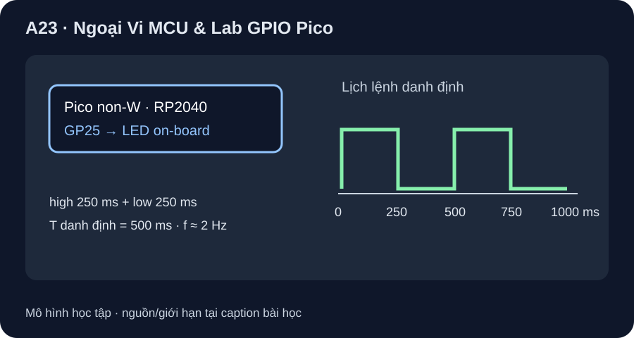

Ngoại Vi MCU & Lab GPIO Pico
Dùng LED tích hợp trên Pico không W để kiểm chuỗi lệnh GPIO; timing host chỉ là lịch dự kiến.
- Phân biệt GPIO, timer, ADC, DMA và IRQ theo việc CPU giao tiếp/thời điểm lấy mẫu.
- Tái lập lab GP25 LED trên Pico non-W bằng mã MicroPython và đối chiếu lệnh bằng fake Pin trên host.
- Tính chu kỳ/frequency/duty danh định và nêu lý do lịch lệnh không bằng phép đo jitter của board.

Đọc hình bằng chữ
GP25 của RP2040 trên Pico non-W đi tới LED tích hợp. Mã đặt GP25 làm output, khởi đầu low, rồi high 250 ms, low 250 ms lặp lại. Lý tưởng t=0 high, t=250 ms low, t=500 ms high, t=750 ms low; chu kỳ lệnh 500 ms. Hình không vẽ điện trở/nguồn/pad đo, và không áp cho Pico W hay ESP32-C6 board.
1. Ngoại vi làm gì?
GPIO xuất/đọc mức số; timer tạo mốc thời gian; ADC đổi điện áp analog thành mã số; DMA chuyển dữ liệu theo cấu hình mà CPU không phải tự sao chép từng phần tử; IRQ báo sự kiện để CPU chạy handler. Chúng thường có thanh ghi điều khiển được truy cập qua bus. Cần phân biệt đặt một lệnh GPIO với đo điện áp tại pad, và sleep theo phần mềm với một waveform timer/PWM phần cứng. RP2040 datasheet là nguồn để tra peripheral và giới hạn thực; A23 chỉ làm lab GPIO.
2. Lab có mã và điều kiện board
Chọn Raspberry Pi Pico đời đầu không W, tài liệu board minh họa Rev3. Raspberry Pi C SDK guide xác nhận LED Pico ở GP25, còn Pico W nối LED qua wireless chip WL_GPIO0. Mã pico_gpio_blink.py dùng MicroPython machine.Pin và sleep_ms: tạo Pin(25, Pin.OUT, value=0), ghi 1, chờ 250 ms, ghi 0, chờ 250 ms. Code không cần dây ngoài và không áp cho ESP32-C6-DevKitC-1. Trước khi chạy trên board thật, kiểm đúng tên/PCB/firmware Pico non-W và cáp USB dữ liệu; lưu phiên bản MicroPython cùng log quan sát.
| Thời điểm danh định | GP25 ra lệnh | LED kỳ vọng |
|---|---|---|
| 0 ms | 1 | Bật |
| 250 ms | 0 | Tắt |
| 500 ms | 1 | Bật |
| 750 ms | 0 | Tắt |
Chu kỳ danh định T=250+250=500 ms, f=1/T=2 Hz, duty high 250/500=50%. Thời điểm thực có overhead và jitter; LED mắt thường chỉ cho biết hiện tượng, không xác nhận đúng 250 ms. GP25 điều khiển LED trên board nhưng không xuất ra header Pico; không hướng dẫn cắm probe vào một pin header không tồn tại.
3. Hai đường kiểm khác nhau
- Không có board: chạy
python tools/verify_phase9_pico_lab.py. Fake Pin kiểm thứ tự init-low, high/sleep, low/sleep và tính lịch 250/250 ms; đây là kiểm phần mềm, không là mô phỏng điện RP2040. - Có Pico non-W đúng revision/firmware: chép file lab thành
main.pytrên MicroPython board, reset và quan sát LED tích hợp. Ghi mã board, PCB marking, bản firmware, nguồn USB và trạng thái LED. Nếu cần số đo timing, dùng phương án đầu dò quang hoặc test point hợp lệ đã được reviewer duyệt; chưa có phép đo này. - Đổi
high_ms=100,low_ms=400trong hàm gọi để dự đoán tần số/duty; kiểm lại trên host trước khi nạp board.
Pico W LED đi qua wireless chip; DevKitC v1.2 có RGB LED kiểu addressable ở GPIO8, không điều khiển bằng cùng một lệnh Pin(25). Không có compile/nạp/đo board trong bản QA hiện tại. Phần định thời timer/IRQ/DMA chỉ được giải thích kiến trúc, chưa dùng ở lab này.
Đổi lab thành high 100 ms, low 400 ms. Tính T, f và duty high danh định; mô tả mức ở bốn mốc 0/100/500/600 ms. Nếu host fake Pin PASS, điều gì còn chưa được chứng minh trên Pico thật? Có được chép cùng lệnh GP25 sang Pico W không?
- 1 điểm:
T=100+400=500 ms. - 1 điểm:
f=2 Hz, duty high100/500=20%. - 1 điểm: 0 high, 100 low, 500 high, 600 low trong lịch lý tưởng.
- 1 điểm: fake Pin chỉ kiểm trình tự phần mềm, chưa xác nhận firmware/điện áp/LED/jitter/clock trên board.
- 1 điểm: Pico W LED qua WL_GPIO0, không áp thẳng mã GP25; phải dùng đúng board API/mapping.